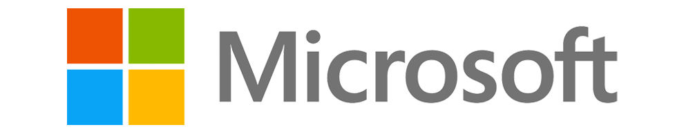

Making a Digital Difference
Seminar @ Micorsoft EBC Brussel
Hoe een seminar voor bedrijven onbewust mijn keuze voor IT beïnvloedde
Voorgeschiedenis
In het zesde middelbaar kon ik een keuzevak kiezen.
Een van die keuzevakken was programmeren. Mijn keuze was dus zeer snel gemaakt, technologie interesseerde me namelijk. Ik zag het ook als een uitgelezen kans om kennis te maken met programmeren en zo aan te voelen als dit iets voor mij was of niet.
Gedurende het schooljaar heb ik dus leren programmeren dus begon met blokjes, daarna eigen code schrijven en als eindwerk in het eerste semester heb ik samen met een andere leerling een Arduino omgetoverd tot een cluster van sensoren die konden gebruikt worden voor de lessen biologie.
Tijdens het tweede semester heb ik mijn kennis alleen maar uitgebreid en begon ik alsmaar grotere programma’s te schrijven. Dit begon met tutorials, maar al snel ging dit over tot eigen programma’s verzinnen en zo kijken hoe alle stukjes code in detail werken. Als eindwerk in het tweede semester heb ik dan ook mijn eigen versie van het populaire spel “Snake” gemaakt.
Maar nu genoeg over het vak programmeren. Wat heeft de titel te maken met dit artikel?
Seminar
Tijdens deze module kreeg ik de kans voorgeschoteld om samen met een andere student naar Brussel te gaan. Daar zouden we een ganse dag een seminar meevolgen met als titel “Making a digital difference”. Ik zag dit dan ook als een buitenkansje en ging gretig in op de uiitnodiging.
Dus op 22 februari 2018 ging ik samen met een medestudent en 2 leerkrachten naar Brussel. Bij aankomst in het EBC was ik wat overdonderd want het gebouw was namelijk volgepakt met mensen uit het bedrijfsleden in chique pakken. Daar stond ik dan in mijn hemd en jeansbroek. Door vertraging bij NMBS hadden we dan ook nog eens de meet & greet met de keynote speaker gemist. Ze hadden dit nochtans speciaal voor ons geregeld zodat we op voorhand ook al wat vragen kwijt konden.
Na een stevig ontbijt aangeboden door Microsoft begon het evenement. We begonnen met de keynote door Toni Townes-Whitley, een zeer boeiend persoon. Tijdens de keynote was ik dan ook aan het balen dat we de meet & greet gemist hadden. Gelukkig konden we na haar keynote nog enkele vragen stellen voor de ganse zaal.
Tijdens het evenement kregen we zeer veel info op ons afgevuurd over IOT, artificiële intelligentie en nog een hele resem moderne technologieën waar Microsoft zwaar in aan het investeren was. Deze meeting en de bijhorende workshops gaven met dan ook een veel uitgebreidere visie over de toekomst en in welke richting de IT zich aan het bewegen was. Het was al snel duidelijk dat AI de toekomst is, maar de computing power moest nog veel omhoog om tot een zeer groot en krachtig netwerk van computers te komen. De huidige chips konden al gans Wikipedia in minder dan 0.01 seconden vertalen naar het Spaans, maar het moest nog sneller.
Aftermath
Na dit evenement begon het mij altijd maar duidelijker te worden dat ik die richting uit wilde. IT was de sector waar ik later in wilde werken. Voorzichtig aan was het idee om programmeur te worden ook meer en meer in mijn hoofd aan het verschijnen. Toen het uiteindelijk tijd werd om mijn studiekeuze te maken, heb ik eigenlijk niet meer al te veel getwijfeld en heb ik resoluut gekozen om Toegepaste Informatica te studeren.